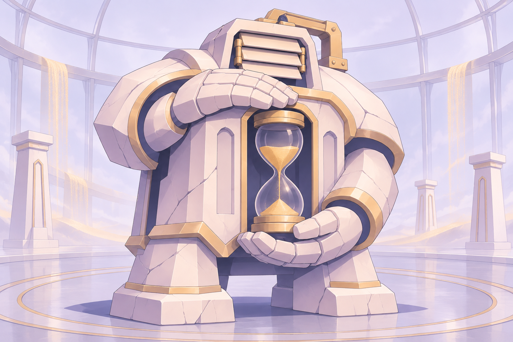
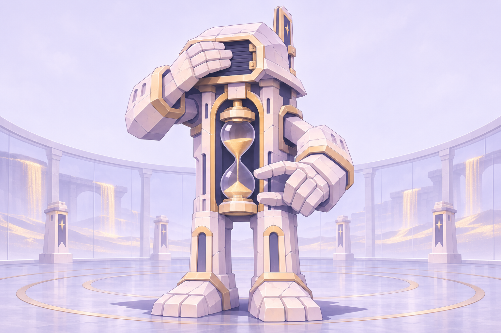
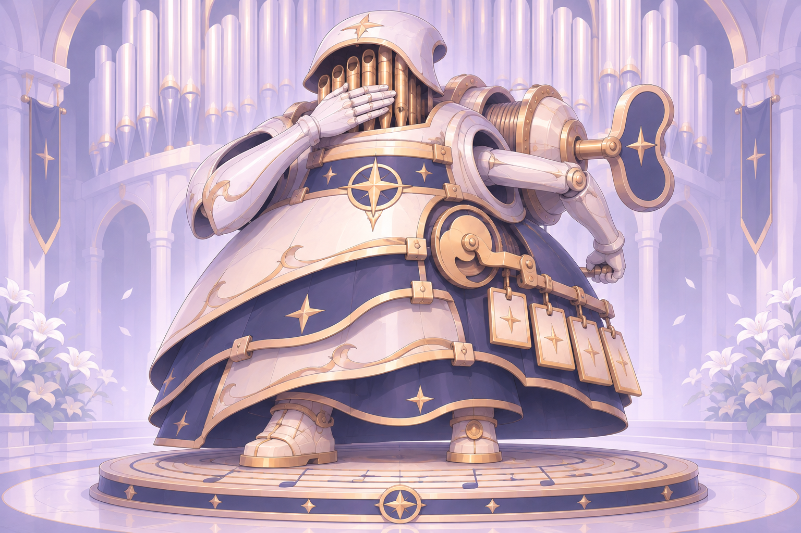
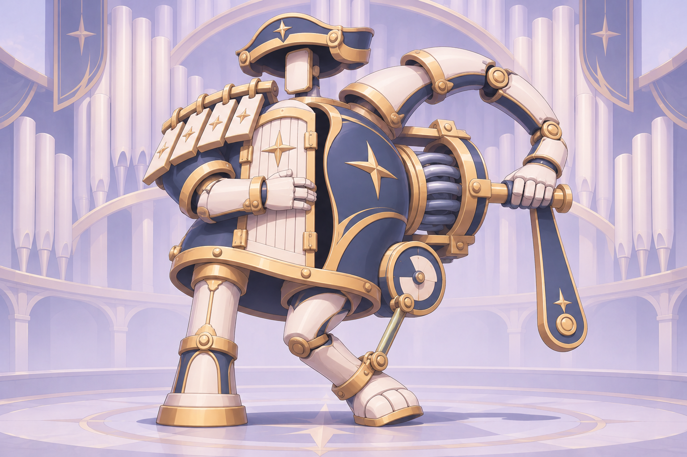
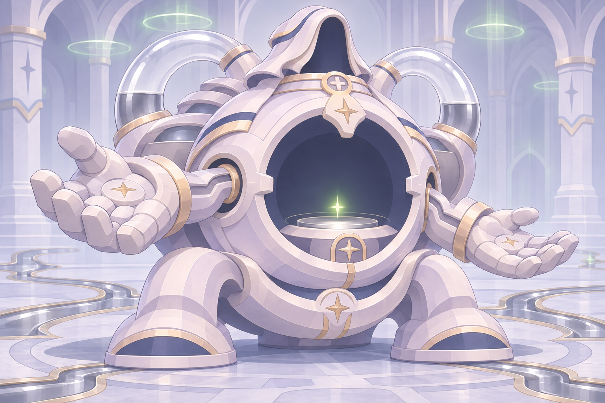
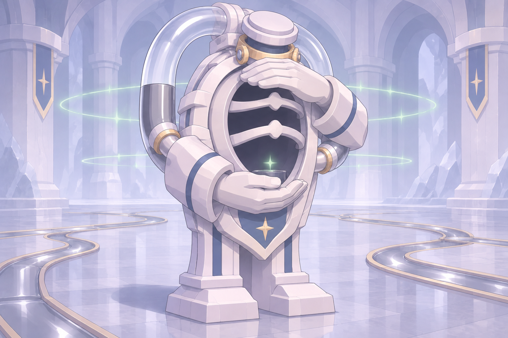
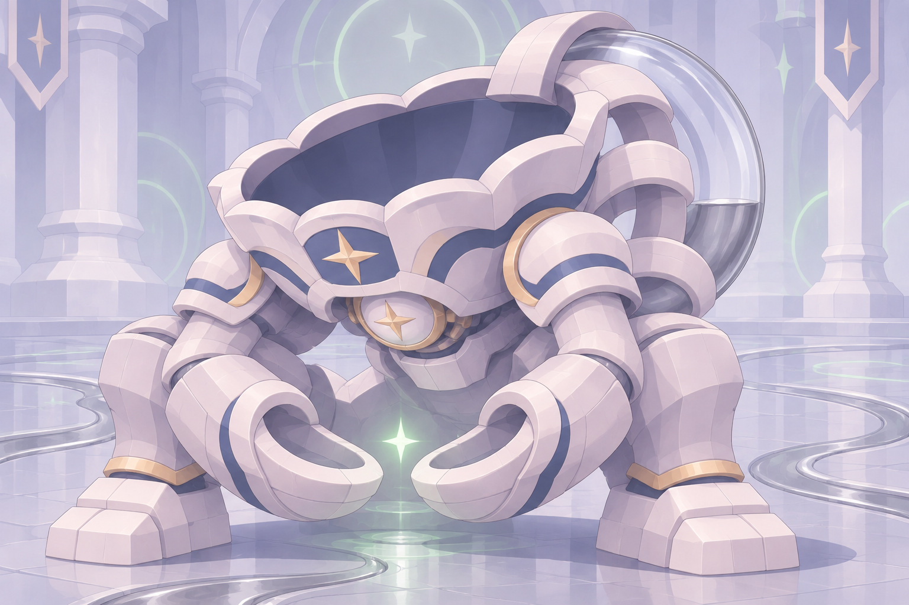
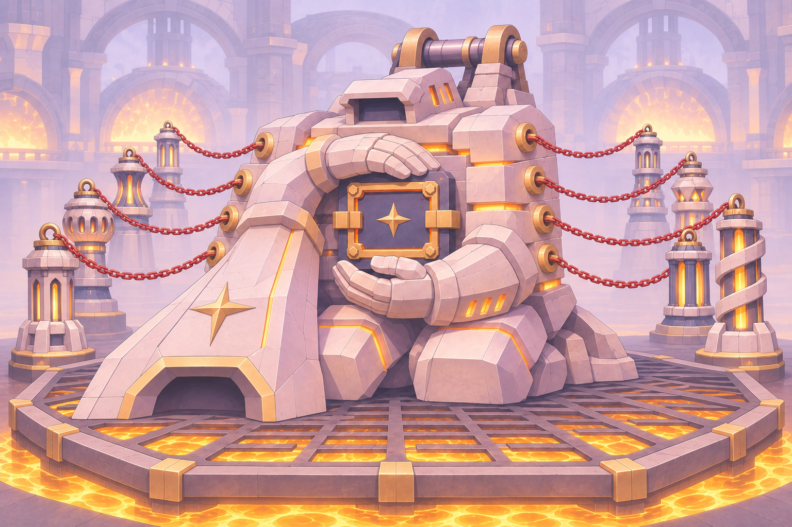
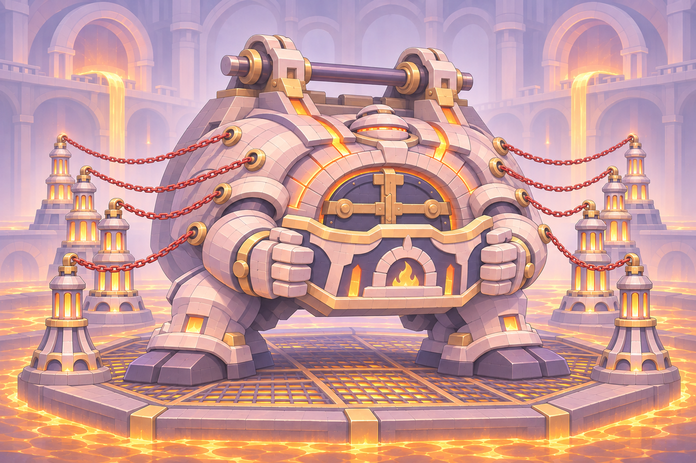
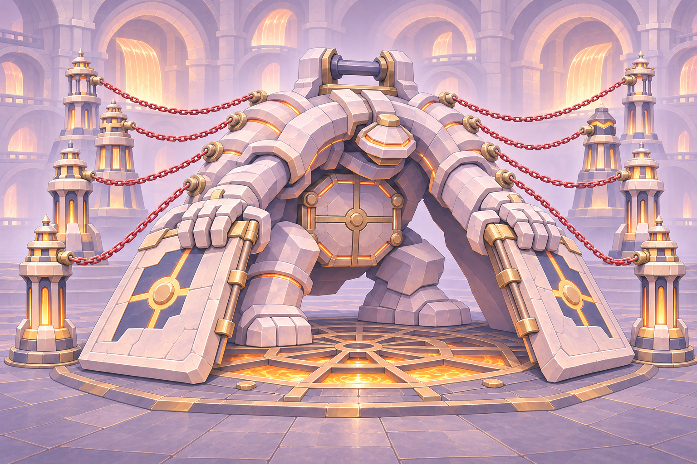

아스텔라 제2부 · 스테이지 고유 의례체 15안
사용자 수정에 따라 2스테이지 외형을 공통 템플릿으로 쓰지 않고, 1~5스테이지 고유의 의례체를 각각 세 안씩 새로 제작했습니다. 머리, 몸의 질량, 지지 구조, 자세와 색온도를 층마다 구분했습니다. 실제 1부 보스 PNG만 화풍·조형 참고로 입력했으며 이전 2스테이지와 v2 이미지는 입력하지 않았습니다. 이미지를 누르면 1536 × 1024 원본 PNG가 열립니다.
Stage01 · 기억을 흘리는 정찰병





Stage02 · 끝나지 않는 진혼곡의 무희





Stage03 · 얼어붙은 혈관의 연금술사






Stage04 · 영원히 타오르는 가마의 수호자






Stage05 · 무너진 천구를 떠받치는 부단장


제작: 내장 image_gen. 단일 전신 컨셉샷이며 실제 3D 메시나 회전 렌더는 아닙니다. 전체 프롬프트 · 공통 아트 방향